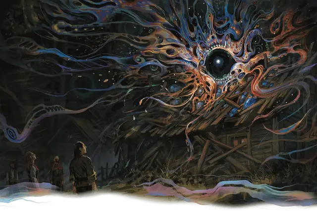

Невыразимый ужас
Unspeakable Horror
Огромное Чудовище, Хаотичное Злое

Класс Защиты 13 Инициатива +4 (14)
Хиты 126 (12к12 + 48)
Скорость 40 футов
| мод | спас | ||
|---|---|---|---|
| СИЛ | 21 | +5 | +5 |
| ЛОВ | 13 | +1 | +1 |
| ТЕЛ | 19 | +4 | +7 |
| мод | спас | ||
|---|---|---|---|
| ИНТ | 3 | −4 | −4 |
| МДР | 14 | +2 | +5 |
| ХАР | 17 | +3 | +3 |
Сопротивление урону Кислота, Некротический, Холод, Яд
Иммунитеты Испуганный, Опрокинутый, Опутанный, Схваченный
Чувства пассивное Восприятие 12, Истинное зрение 60 футов
Языки нет
Опасность 8 (3 900 опыта; БВ +3)
Особенности
Неописуемое обличие. Броски атаки против ужаса совершаются с Помехой. Эта особенность перестаёт работать, если ужас Недееспособен.
Регенерация. Ужас восстанавливает 10 Хитов в начале каждого своего хода, если у него есть хотя бы 1 Хит.
Ужасающая аура. От ужаса в 10-футовой Эманации исходит аура, если у него нет состояния Недееспособный. Спасбросок Мудрости: Сл 15, все враги, начинающие свой ход в ауре. Провал: Цель Испугана до начала своего следующего хода. Испуганная таким образом цель Парализована. Успех: Цель получает Иммунитет к ауре этого ужаса на 24 часа.
Действия
Мультиатака. Ужас совершает три атаки Натиском фантазмов.
Натиск фантазмов. Бросок рукопашной или дальнобойной атаки: +8, досягаемость 5 фт. или дистанция 60 фт. Попадание: 14 (4к6) урона одного из следующих типов (по выбору ужаса): Некротический, Психический, Холодом, Ядом.
Реакции
Искажение разума. Условие: Видимое ужасом существо в пределах 120 футов от него совершает действие Изучение или спасбросок Телосложения на поддержание Концентрации. Эффект — Спасбросок Мудрости: Сл 15, вызвавшее ответ существо. Провал: 7 (2к6) Психического урона, и цель Ошеломлена до конца своего следующего хода.
Бонус мастерства +3
Среда обитания Любая
Сокровища Отсутствуют
Невыразимый ужас
Кошмарное чудовище Туманов
Невыразимые ужасы — сущая анафема для всего живого в мультивселенной. Их обличья беспрестанно меняются, попирая и разрывая саму ткань действительности. Всякий, кто взглянет на этих созданий, мгновенно постигает их абсолютную, чудовищную неправильность. Подобное откровение часто оказывается последним, что зрящий успевает осознать, прежде чем его растворят в себе разрушительные силы хаоса и диссонанса.